The purpose of this project was to make use of different types of filters and frequency techniques to manipulate images!
The first two images, d/dx and d/dy show you the vertical and horizontal edges, respectively of the original cameraman. This just required a simple convolution with the vector [1, -1], reshaped in the appropriate format. To obtain the third image, I simply utilized the matrices representing d/dx and d/dy and followed the formula from class to derive a matrix where each entry represented the magnitude of the gradient at said point. This allowed for edges to be highlighted and for the user to see an outline of the cameraman. The fourth pic is a binarized version of the third, which meant that every entry value that was 2.9 (I chose) standard deviations above the mean gradient magnitude value would be turned to 1, and everything else would be a 0. This allowed for finer edges to be exemplified and not so finer ones to disappear.
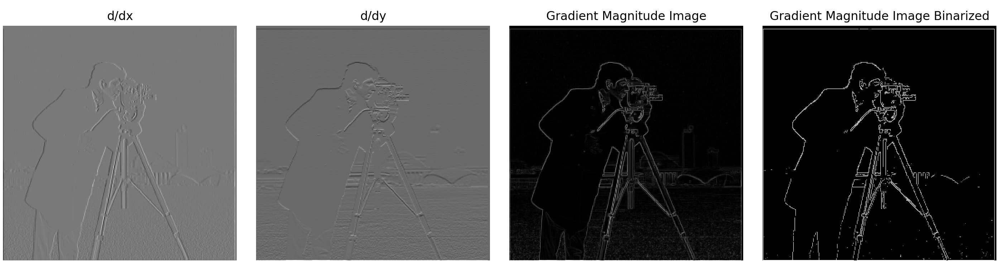For the first image, I convolved the 2D Gaussian w/ image first, and then took the x & y derivatives of said image. For the second image, took the x & y derivatives of the 2D Gaussian first and then convolved that with the image. The respective formulas are in the title of the images, but as you can see, they yield the same response. There is a very minute small difference, but that is most likely due to how numpy rounds numbers in calculations. When I looked at the difference matrix of both the image matrices, the values were all like some number times 10 to the power of -17/-18.
Compared to 1.1, the main difference that I see is that the edges are more defined in the final picture.
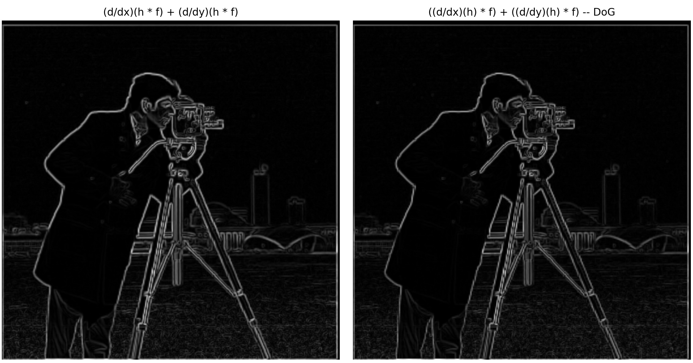In class, we were taught that all sharpening an image entailed was exemplifying the high-frequencies in an image. In order to extract the high-frequencies for these images, I first ran a gaussian blur convolution over the image to get a smoothed out version with only low-frequencies, and then I subtracted this from the regular image to get a new matrix that represented the high-frequencies. Then I multiplied this new matrix by a factor alpha, which basically tells you how sharp you want the image to be, and I added this to the original image to yield a new one that looks more sharp and defined.
 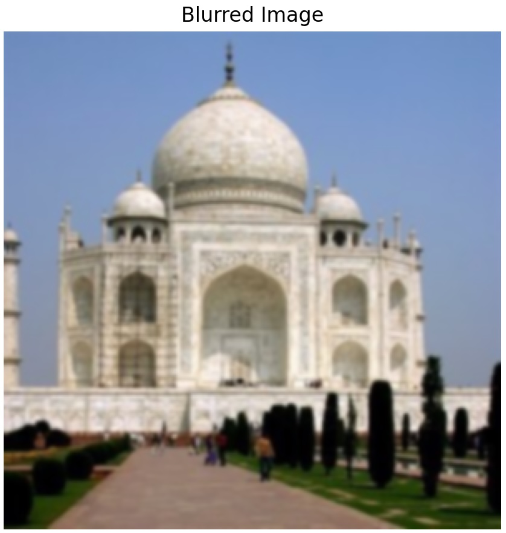
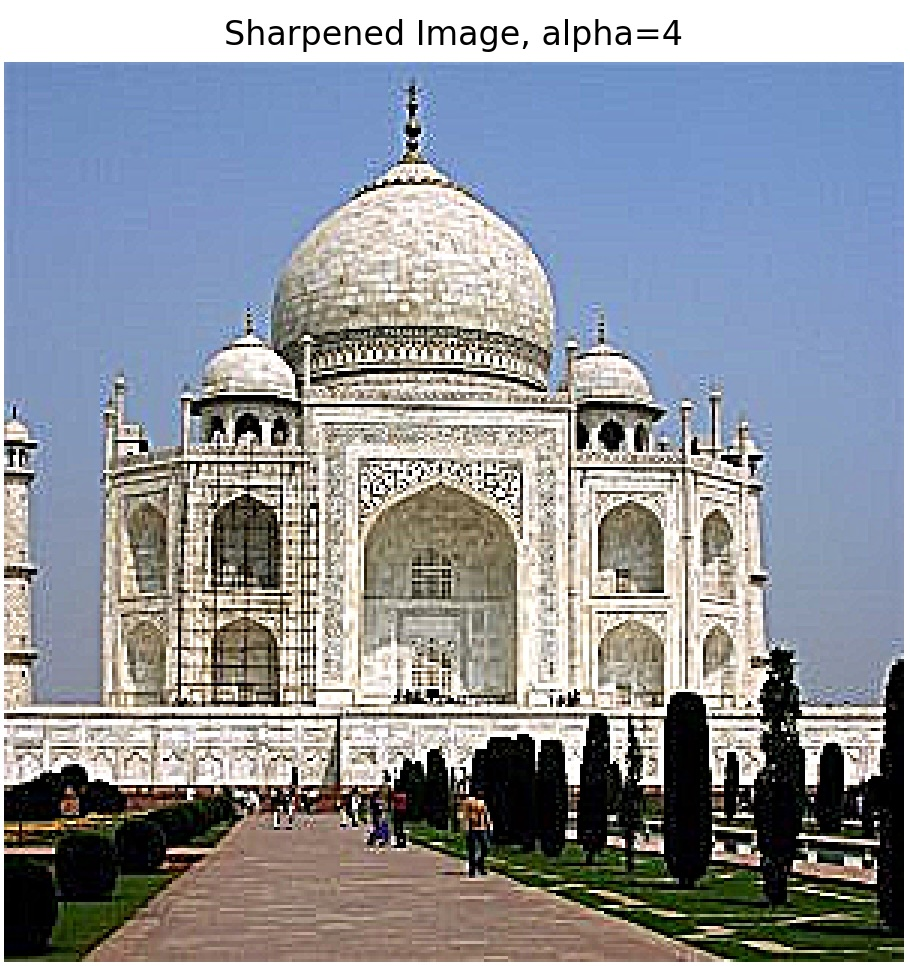
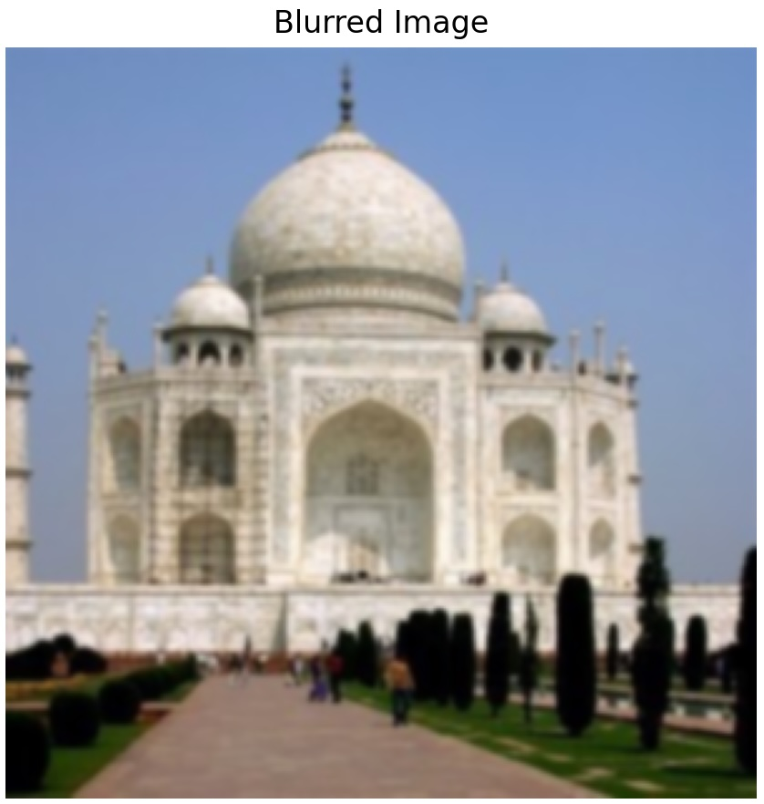
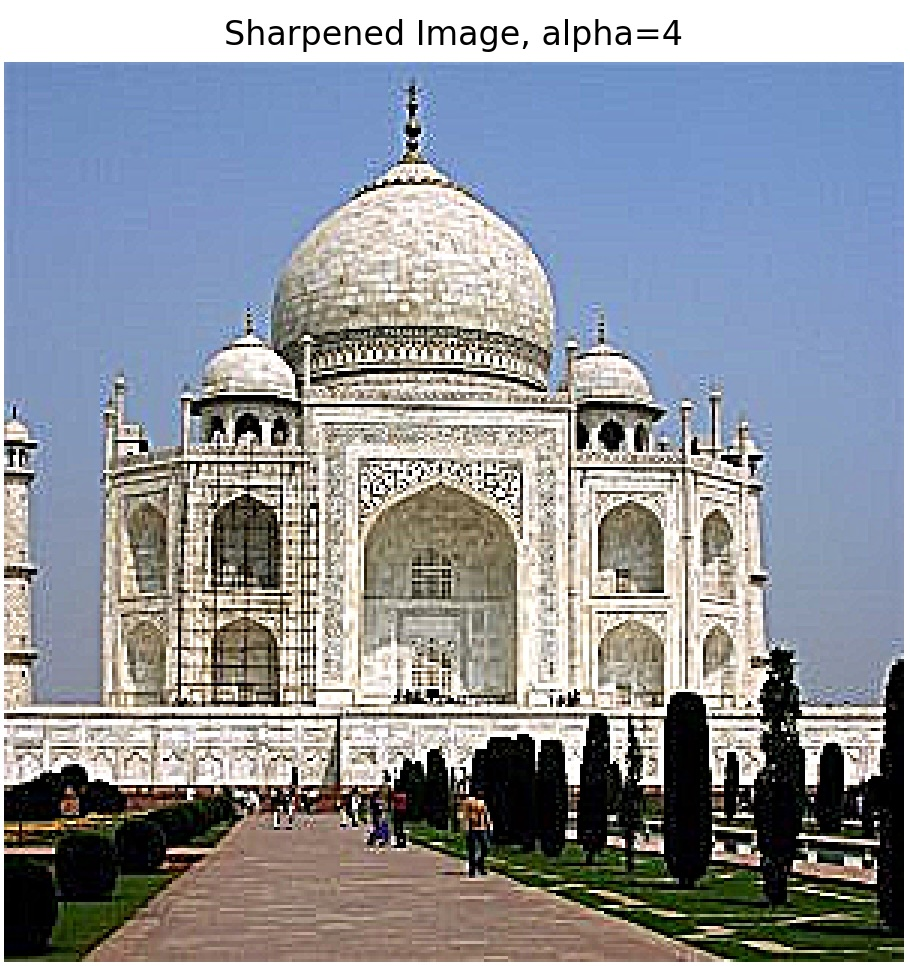
In this part, I first aligned the images using the starter code that the TAs provided. I had to edit my GUI backend settings a little bit to get this to work, but once I did that, I was able to select two points for each image and then let those points define the alignment. I found that the best points to pick were the eyes.
Once done aligning, I then ran the gaussian filter blur on both images, and for only the second image, I subtracted this blurred version from the aligned image to extract the high-frequencies. When subtracting, I multiplied the blurred image matrix by 0.5 to allow for some low frequencies to stay. I felt that this would allow for a smoother transition when the user is moving from farther to closer when looking at they hybridized image. After my subtraction, I clipped values to a range of 0 to 255 to account for any negative values that may have come up.

 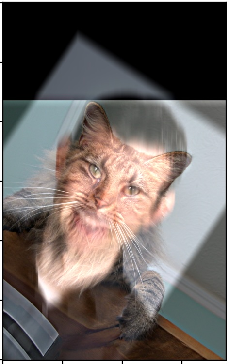
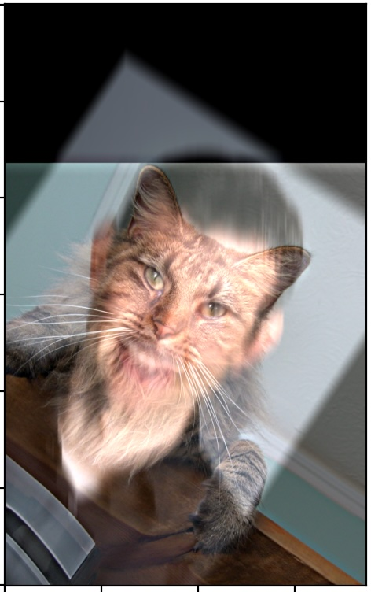
These are two beautiful males in my life.
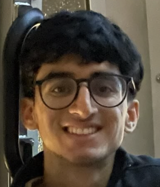 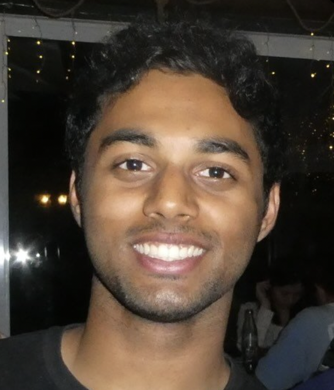 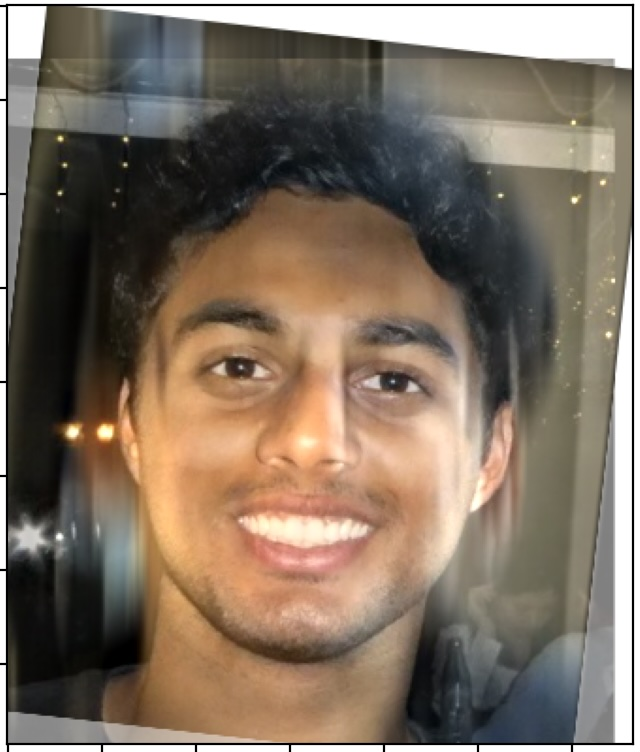And these are two beautiful females I wish were in my life. This one is not so great and probably needs more processing.
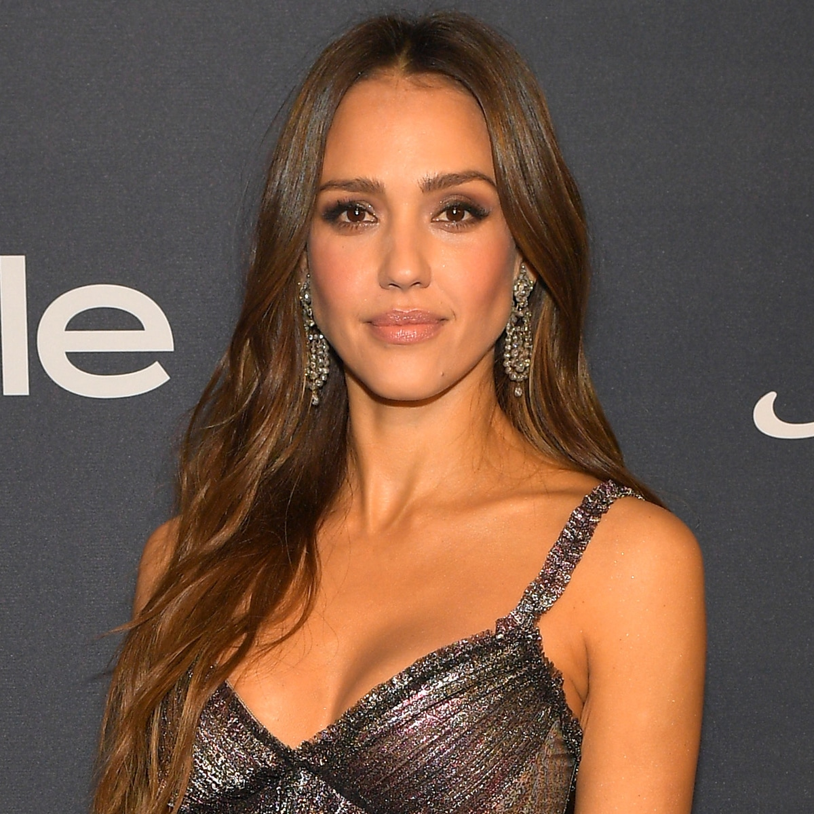 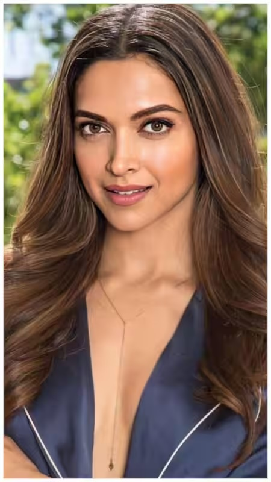 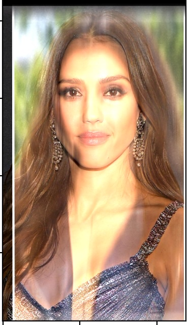These are the visuals for the log magnitudes of the Fourier Transforms for my two friends.
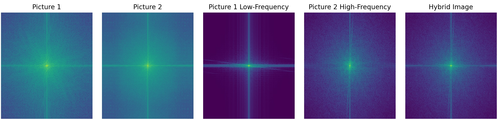In this part of the project, we were required to blend two images together using multiresolution blending. This entails creating a Laplacian stack for each of the images, applying a gaussian-blur mask to the respective laplacians at each level, summing up all these post-processed laplacians, and then normalizing the final matrix to obtain a nicely-blended image. In order to get a Laplacian stack, you first have to create a Gaussian Stack for each of the images, which is similar to a Gaussian Pyramid except you are keeping the same dimensionality all whilst blurring it. Then you create the Laplacian stack by subtracting an image in the Gaussian stack at a level k+1 from the image in the same stack at level k. This new image matrix represents the high-frequency difference between the two images.
Here is my laplacian stack for the apple
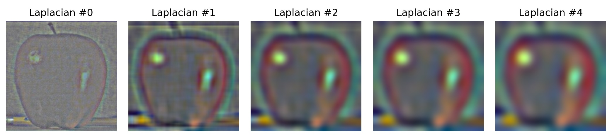Here is my laplacian stack for the orange
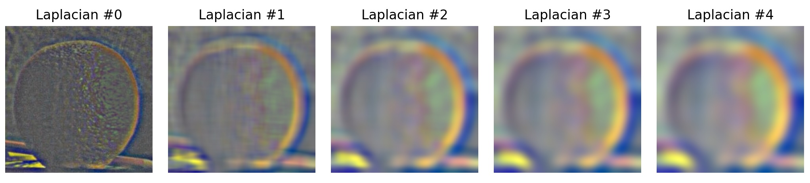Here is the final result from blending the two laplacian stacks from above!
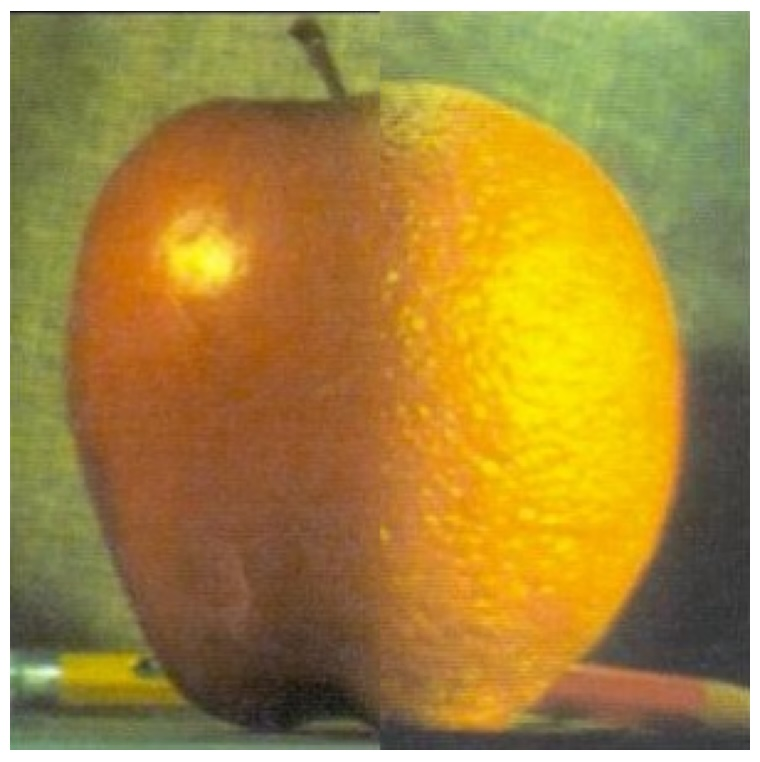I tried blending my two friends using the same technique.
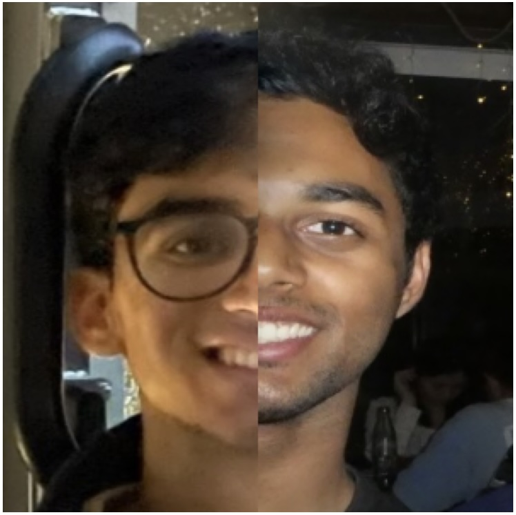I also implemented a circle mask for two of my other friends.
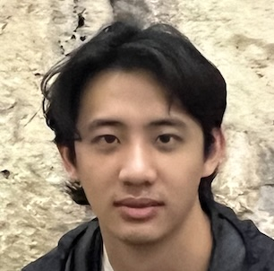 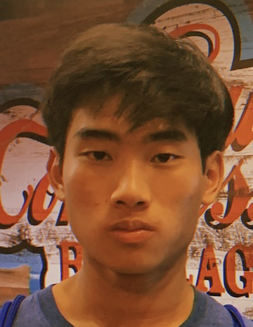 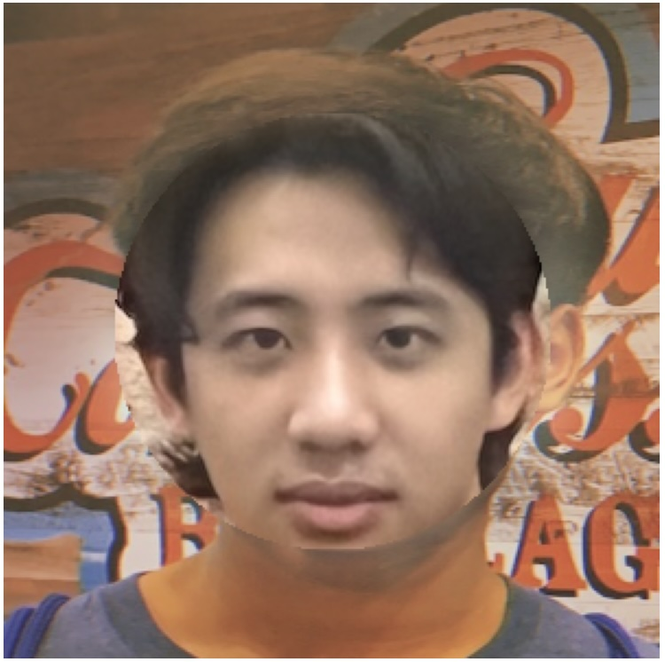